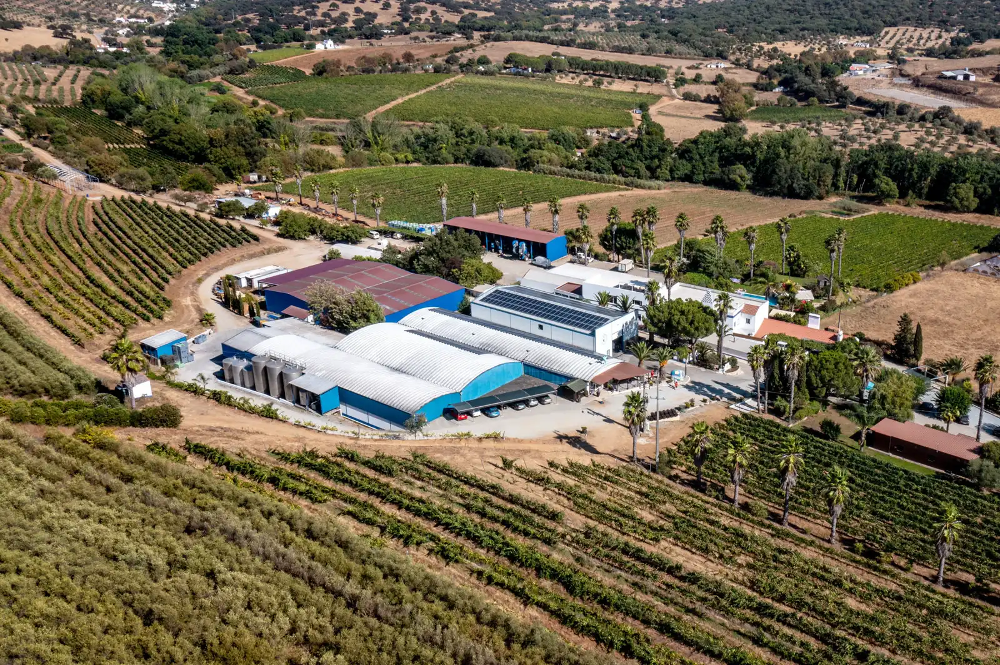
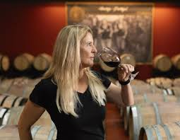
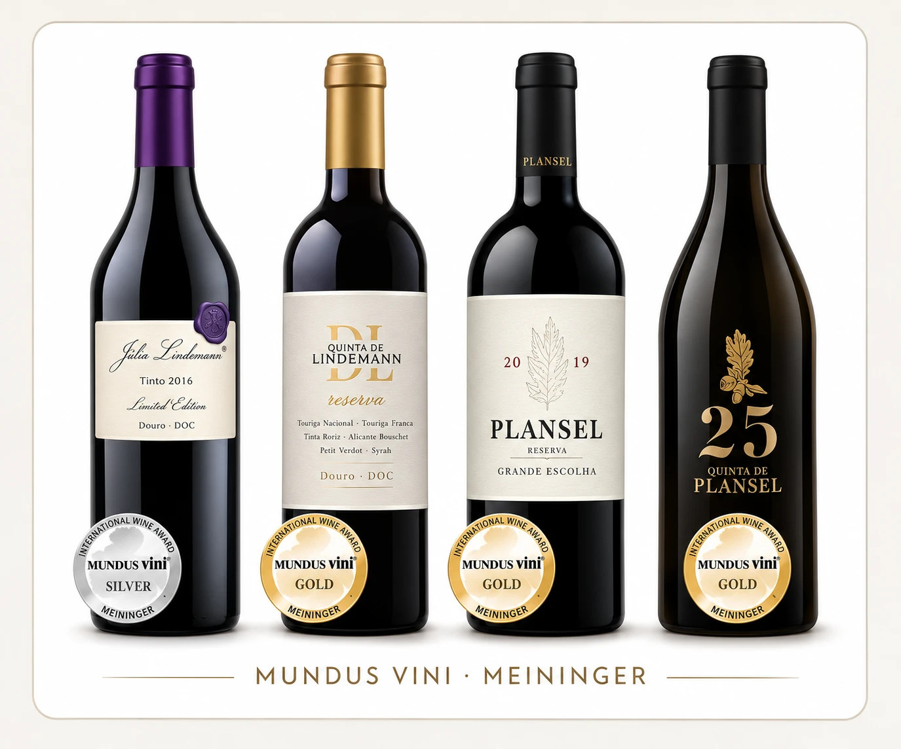
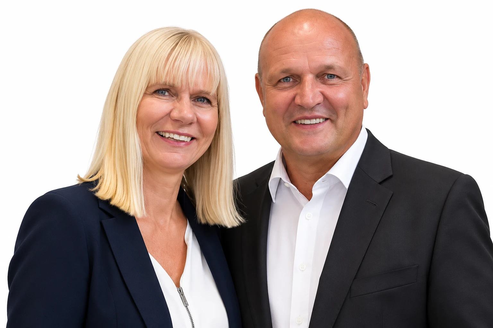
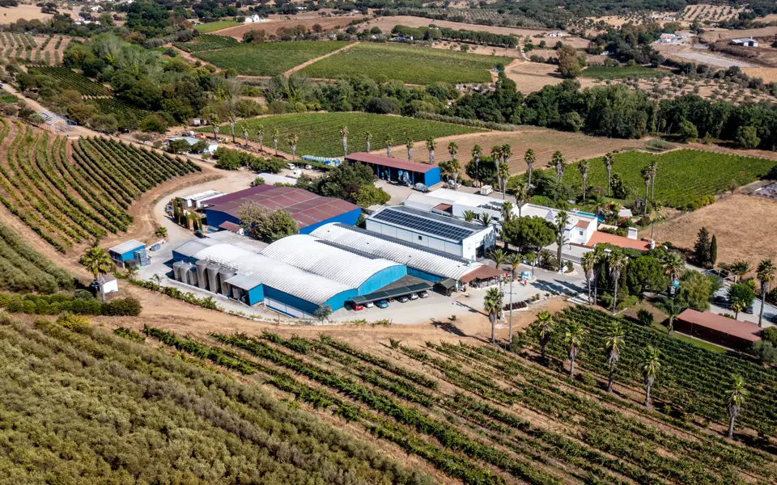
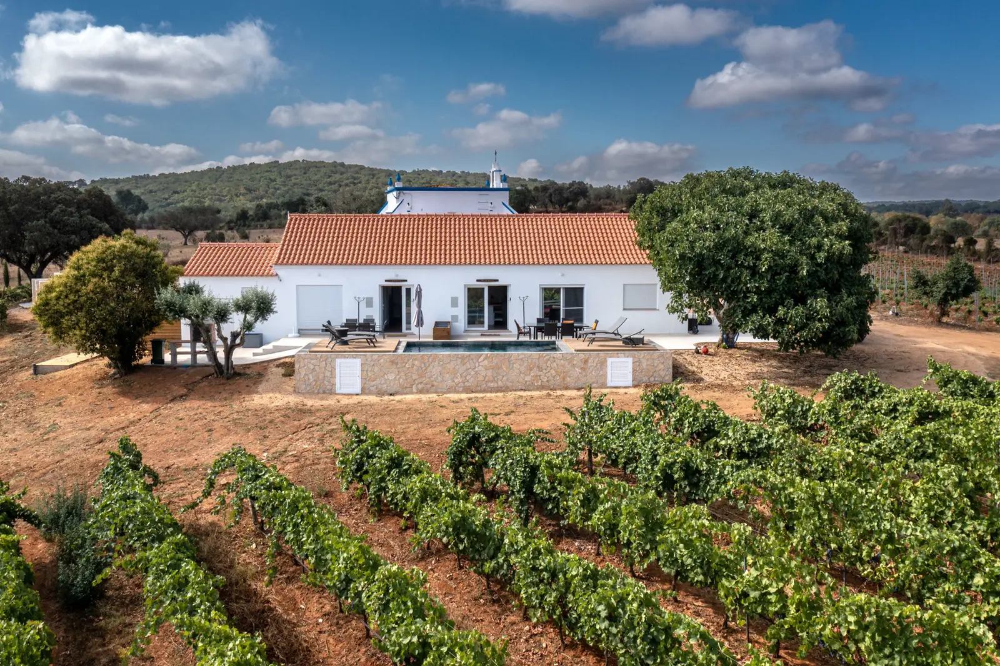
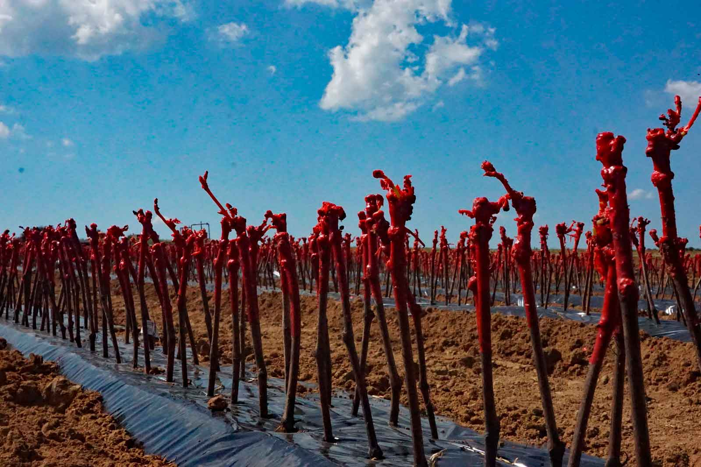

Quinta da Plansel · Alentejo
Wino. Winorośl. Wiedza.
Od 50 lat w rękach rodziny, od krzewu winorośli do kieliszka.

 Nasze produkty
Nasze produkty

Cały Plansel w skrócie
Co znajdziesz w Plansel.
Od wina w kieliszku po winorośl w ziemi: rodzinna firma, która od 50 lat wspiera winnice.
- 01Wydarzenia winiarskieWydarzenia w Portugalii i na świecie, co tydzień nowe.
- 02Kup wino Plansel onlineCzerwone, białe i różowe z Alentejo, prosto z winnicy.
- 03Partnerzy, sieć i degustacjeSklep internetowy B2B i B2C, partnerzy w Niemczech i Szwajcarii, degustacje z restauracjami, hotelami i na targach.
- 04Akademia: Wreszcie zrozumieć winoKursy WSET według londyńskiego standardu, uznawane na świecie, po portugalsku i angielsku.
- 05Nocleg i przyjęcia w QuintaApartamenty, miejsce dla kamperów i sale na wesela, imprezy firmowe i przyjęcia, z obsługą lub bez.
- 06Butelkowanie i doradztwoMałe winnice butelkują u nas i otrzymują wsparcie trzech enologów z niemieckim i międzynarodowym doświadczeniem.
- 07Kombajn z operatoremMechaniczny zbiór winogron i oliwek: zapewniamy kombajny z doświadczonym operatorem.
- 08Kup sadzonki winorośliCertyfikowane sadzonki i klony z Viveiros Plansel.
- 09Biuro w outsourcingu: IT, marketing, AI i serwisKsięgowość, Instagram i strona ze sklepem dla małych winnic. Do tego Plansel Technology: aplikacje AI i szkolenia dla właścicieli.
 Wydarzenia01
Wydarzenia01
Co dzieje się w tym tygodniu w świecie wina w Portugalii.
Święta wina, degustacje, targi i polecane restauracje. Aktualizowane w każdy czwartek, z bezpośrednim linkiem do organizatora.
Portugalia
- 4–6 gru 2026 · Vila de FradesVITIFRADES
- 16 sty 2027 · VidigueiraGala Europejskie Miasto Wina 2026
- 14–21 lut 2027 · PortoWine & Travel Week
- 18–21 lut 2027 · PortoEssência do Vinho
- koniec lut 2027 · PortoSimplesmente Vinho
- 30 kwi–2 maj 2027 · MelgaçoFesta do Alvarinho e do Fumeiro
- 29 maj 2027 · Quinta da PlanselPlansel Rosé Party
- 2–3 lip 2027 · LamegoDouro & Porto Wine Festival
- 13–19 lip 2027 · Ponte de LimaFesta do Vinho Verde
- połowa wrz 2027 · Peso da RéguaFesta das Vindimas do Douro
Międzynarodowe
- lut 2027 · ParyżWine Paris
- mar 2027 · DüsseldorfProWein
- kwi 2027 · WeronaVinitaly
- wiosna 2027 · Neustadt/WeinstrasseMundus Vini
- maj 2027 · LondynLondon Wine Fair
Restauracje
- ÉvoraRestaurante Fialho
- Vila Nova de MilfontesTasca do Celso
- LizbonaTaberna da Rua das Flores
- PortoProva
- Montemor-o-NovoWine & Dine w Quinta da Plansel
Terminy bez gwarancji. Przed podróżą sprawdź u organizatora.
Zgłoś wydarzenie
Reklama · billboard 970 × 250 · przez symplr
 Wina02
Wina02
Quinta da Plansel · Wina
Portugalskie wino z wyższej półki. Z pochodzeniem aż do krzewu.
Dorina, enolożka wykształcona w Geisenheim, od 1993 roku robi wino z winorośli swojego ojca. O każdej butelce wiemy, z jakiego klonu pochodzi.


Rekomendacja AI
Plansel Tinta Barroca
Tinta Barroca daje ciemne owoce i miękkie taniny. Dobrze znosi mięso i gęste sosy.
Uzasadnienie: Pełne + mięso → czerwone o strukturze
Zamów w sklepie
Nagrodzone na Mundus Vini
Degustowane w ciemno. Nagrodzone.
Regularnie zgłaszamy nasze wina do Mundus Vini, międzynarodowego konkursu wydawnictwa Meininger. Międzynarodowe jury degustuje w ciemno, bez etykiety i nazwy. Każdy medal jest więc niezależnym znakiem jakości win Plansel.
 Quinta da Plansel 25 Anos (1997–2022)Edycja jedyna w swoim rodzaju
Quinta da Plansel 25 Anos (1997–2022)Edycja jedyna w swoim rodzaju- DL Dorina Lindemann Tinto Reserva 20212024
- Plansel Grande Escolha 20192024
 Júlia Lindemann Limited Edition 20192024
Júlia Lindemann Limited Edition 20192024- 6× złoto i 5× srebro2023
- Plansel Selecta Reserva Branco 20142015

Christoph & Andrea MeiningerZarząd · Wydawnictwo Meininger
Mundus Vini w Meininger Wina Plansel Relacja Quinta
Dorina i Luísa są ponadto oficjalnymi degustatorkami Mundus Vini.
 Partnerzy, sieć i degustacje03
Partnerzy, sieć i degustacje03
Partnerzy, sieć i degustacje
Tak Plansel trafia do Ciebie.
Prosto z naszego sklepu internetowego, przez naszych partnerów w Niemczech i Szwajcarii albo w kieliszku: na degustacjach, roadshow i targach.
Dla kogo jesteśmy
 01GastronomiaRestauracje, winiarnie, bary hotelowe, beach cluby i cateringZapytaj
01GastronomiaRestauracje, winiarnie, bary hotelowe, beach cluby i cateringZapytaj 02HoteleKarta win, bar, prezent powitalny i sklep hotelowyZapytaj
02HoteleKarta win, bar, prezent powitalny i sklep hotelowyZapytaj 03Handel winemSklepy z winem, garrafeiras, delikatesy, sklepy internetowe i duty-freeZapytaj
03Handel winemSklepy z winem, garrafeiras, delikatesy, sklepy internetowe i duty-freeZapytaj 04Hurt i eksportDystrybutorzy, hurtownie gastronomiczne, importerzy i marki własneZapytaj
04Hurt i eksportDystrybutorzy, hurtownie gastronomiczne, importerzy i marki własneZapytaj 05EnoturystykaBiura podróży, wycieczki po Alentejo i wycieczki z rejsówZapytaj
05EnoturystykaBiura podróży, wycieczki po Alentejo i wycieczki z rejsówZapytaj 06Firmy i prezentyPrezenty dla klientów, przyjęcia i butelki z własną etykietąZapytaj
06Firmy i prezentyPrezenty dla klientów, przyjęcia i butelki z własną etykietąZapytaj 07Wesela i wydarzeniaPary młode, organizatorzy, quinty, targi i festiwaleZapytaj
07Wesela i wydarzeniaPary młode, organizatorzy, quinty, targi i festiwaleZapytaj 08Klienci prywatniW sklepie i online, od zestawu degustacyjnego po magnumDo sklepu
08Klienci prywatniW sklepie i online, od zestawu degustacyjnego po magnumDo sklepu
Sklep internetowy: dla klientów biznesowych i prywatnych

B2B
Dla handlowców, gastronomii i dużych odbiorców
Zamawiaj całą dobę przez dostęp B2B w sklepie Plansel, po wcześniej uzgodnionych cenach. Zaraz po zamówieniu otrzymujesz potwierdzenie e-mailem i możesz ponownie sprawdzić ilości, ceny i produkty. Zamówienie trafia od razu do naszego systemu magazynowego.

B2C
Dla klientów prywatnych
Wybierz wina w sklepie i zamów wygodną dostawę do domu, prosto z winnicy w Alentejo.
Nasi partnerzy handlowi
- NiemcyOrbis ViniImporter z własnym magazynem win Plansel · kontakt: Kaiorbis-vini.de
- BawariaWolfgang BichelePartner sprzedażowy na Bawarię
- KoloniaSklep z winem rodziny WittlingMa Plansel w ofercie i prezentuje nowe wina i roczniki na własnych wydarzeniach
- SzwajcariaPartner wkrótceOsoba kontaktowa zostanie tu wkrótce podana
- PortugaliaQuinta da PlanselProsto z winnicy w Montemor-o-Novo
Chcesz reprezentować Plansel w swoim kraju lub regionie? Zostań partnerem
Degustacje, roadshow i targi
Partnerzy strategiczni: restauracje i hotele
Od lat organizujemy z restauracjami i hotelami roadshow, degustacje i prezentacje nowych win. Nasi partnerzy zyskują wyjątkowe przeżycie dla gości i dobry powód, by zaprosić ich na kolejne wydarzenie.
Zaplanujmy wydarzenie razemDegustacje z Doriną i Luísą
Do zamówienia za wynagrodzeniem: przyjeżdżamy na Twoje wydarzenie, do hotelu lub na targi, w Europie i na świecie, także jako degustacja-show. Obie są oficjalnymi degustatorkami Mundus Vini.
Zapytaj o degustacjęNa targach
Plansel wystawia się na targach branżowych, na ProWein w Düsseldorfie z własnym stoiskiem. Odwiedź nas i spróbuj nowych roczników.
Umów spotkanie na targachSieć: Universidade de Évora · INIAV · WSET London · Meininger Verlag
 Akademia04
Akademia04

Plansel International Wine School
Wreszcie zrozumieć wino
Oficjalne kursy WSET według londyńskiego standardu, prowadzone przez edukatorkę WSET Wilmy Matton, enolożkę Dorinę Lindemann i wykładowców gościnnych. Między szkółką, laboratorium a piwnicą.
- WSET Level 1 · WinesWprowadzenie dla gastronomii i miłośników wina1 dzień
- WSET Level 2 · WinesSzczepy i regiony świata3 dni
- WSET Level 3 · WinesDla przyszłych sommelierów5 dni
- Masterclass PortugalKlony, terroir, piwnica. Z Archiwum Böhma2 dni
info@planselwineschool.com · +351 266 898 921
 Noclegi i przyjęcia05
Noclegi i przyjęcia05
Enoturystyka · Quinta da Plansel
Wyjątkowe doświadczenia, godzinę od Lizbony.
Degustacje w piwnicy, Wine & Dine wśród winorośli, nocleg w Quinta i Plansel Gin Experience.



 Butelkowanie i doradztwo06
Butelkowanie i doradztwo06
Butelkowanie i doradztwo
Butelkowanie i doradztwo w Quinta da Plansel.
Małe winnice butelkują u nas i otrzymują wsparcie trzech enologów z niemieckim i międzynarodowym doświadczeniem.
 Kombajn07
Kombajn07
Kombajn z operatorem
Kombajn z operatorem do winogron i oliwek.
Mechaniczny zbiór winogron i oliwek: zapewniamy kombajny z doświadczonym operatorem.
 Sadzonki winorośli08
Sadzonki winorośli08
Viveiros Plansel
Certyfikowane sadzonki z własnej szkółki.
Od 1981 roku Viveiros Plansel szczepi winorośl i klony portugalskich odmian. Około połowa certyfikowanych sadzonek w Portugalii pochodzi z klonów Plansel.
 Biuro w outsourcingu09
Biuro w outsourcingu09

Plansel Technology
Wprowadzamy winnice w erę AI.
AI zmienia sprzedaż, marketing i administrację szybciej, niż mała winnica jest w stanie nadążyć. Wdrażamy dla Ciebie narzędzia Anthropic, Google Gemini i OpenAI i pokazujemy, jak działają.
Dowód masz przed sobą: Ta strona sama korzysta z AI. Sommelier poleca wina, Archiwum Böhma odpowiada na pytania fachowe, a wszystkie teksty są w siedmiu językach.
Poproś o konsultacjęIndywidualne szkolenia z AI
Dla właścicieli i zespołów, dopasowane do Twojej firmy: pracujemy na Twoich winach, klientach i procesach. Po niemiecku, portugalsku lub angielsku, w Quinta lub u Ciebie.
- Pisanie promptów, które naprawdę działają
- Własni asystenci AI do sprzedaży i biura
- Ochrona danych i bezpieczne korzystanie z AI
Aplikacje AI dla Twojej winnicy
- Sommelier AI, który doradza każdemu klientowi sklepu
- Spersonalizowane e-maile i newslettery dla każdego klienta
- Agent AI odpowiada na zapytania i rezerwacje przez całą dobę
- Opisy win, etykiety i strona automatycznie w 7 językach
- Posty i rolki na Instagram z Twoich zdjęć, z tekstami od AI
- Prognozy sprzedaży i zapasów z Twoich danych
- Faktury i dokumenty są odczytywane, sprawdzane i wstępnie księgowane
Outsourcing
Ty robisz wino, my resztę: strona ze sklepem, media społecznościowe, księgowość. Jedna osoba kontaktowa, stała miesięczna cena.
 Nauka10
Nauka10
Plansel Science · Archiwum Böhma
Nauka stojąca za każdą butelką.
Plansel oznacza „Plantas Seleccionadas”. Za nazwą stoi program badawczy prowadzony z uniwersytetami, który przygotowuje portugalskie odmiany na klimat jutra.


„Portugalia potrzebuje własnych badań, by nie uzależnić się od odmian, które nie pasują do jej gleby i klimatu.”
Comendador Jorge (Hans Jörg) Böhm, urodzony w 1938 roku w Neustadt an der Weinstraße, pochodzi z niemieckiej rodziny handlarzy winem. W 1961 roku jego żaglówka osiadła na mieliźnie koło Cascais i zakochał się w Portugalii. Już w 1969 roku rodzinna firma pod jego kierownictwem była największym importerem portugalskich win w Niemczech.
Po studiach z hodowli winorośli w Geisenheim założył w 1981 roku Viveiros Plansel i rozpoczął pierwszą systematyczną selekcję klonalną portugalskich odmian, wspólnie z Universidade de Évora i dzisiejszym INIAV. Ponad 30 projektów badawczych później klony Plansel są uznane w Kalifornii, Nowej Zelandii i Australii, a duża część portugalskich winnic rośnie na sadzonkach Plansel, sprzedawanych przez Viveiros Plansel i Vinverus.
W 2006 roku prezydent Republiki Portugalskiej mianował go Comendadorem de Mérito Agrícola.
 Nagroda OIV 2010
Nagroda OIV 2010
Dzieło standardowe · Chaves Ferreira, 2007
O Grande Livro das Castas
Wielka księga portugalskich odmian winorośli. Pod redakcją Comendadora Jorge Böhma, nagrodzona przez Międzynarodową Organizację Winorośli i Wina (OIV). Opisuje rodzime odmiany kraju, z których powstają także wina Plansel.
PT · OryginałDostępne
DE · ENTłumaczenie AI, przedsprzedaż
FR · ES2027
中文 · PL2027
-
 Nowość · 2026Livro Branco das Castas VitícolasNowe odmiany odporne na grzyby: jak Portugalia może ograniczyć opryski.
Nowość · 2026Livro Branco das Castas VitícolasNowe odmiany odporne na grzyby: jak Portugalia może ograniczyć opryski. -
 AngielskiThe Portuguese Vineyard and Wine BookHistoria, odmiany, terroir, regiony winiarskie i kuchnia do wina.
AngielskiThe Portuguese Vineyard and Wine BookHistoria, odmiany, terroir, regiony winiarskie i kuchnia do wina. -
 Dinalivro · 2010D. João, Marquês de Montemor-o-NovoHistoria naszej linii win Marquês de Montemor.
Dinalivro · 2010D. João, Marquês de Montemor-o-NovoHistoria naszej linii win Marquês de Montemor.
2006Comendador de Mérito Agrícola, mianowany przez prezydenta Republiki
2008Najlepszy specjalista od uprawy winorośli, Revista de Vinhos
2 × OIVNagrody książkowe Międzynarodowej Organizacji Winorośli i Wina
2013Plakieta honorowa Universidade de Évora
2014Medal honorowy Academia das Ciências de Lisboa
Selekcja klonalna
Ze starych winnic wybiera się i rozmnaża najzdrowsze, najbardziej wyraziste krzewy.
Odmiany odporne
Winorośle, które potrzebują mniej oprysków. Böhm uważa to za najważniejsze zadanie branży.
Zmiana klimatu
Materiał nasadzeniowy na gorętsze lata i mniej wody, testowany w Alentejo.
Dawne odmiany
Niemal zapomniane portugalskie odmiany są odkrywane na nowo i sprawdzane w winie.
Kup sadzonki i klony w Viveiros Plansel
Zapytaj Archiwum Böhma
Prototyp AIAI wytrenowana na 50 latach badań Plansel odpowiada na pytania fachowe w Twoim języku i podaje źródło w książce. Wybierz przykładowe pytanie:
Klon to potomstwo jednego, wyjątkowo dobrego krzewu. Wszystkie rośliny klonu są genetycznie identyczne. Plansel szuka takich krzewów w starych winnicach, przez lata bada ich zdrowotność, plon i jakość wina, i rozmnaża tylko najlepsze.Źródło: Livro Branco das Castas Vitícolas, rozdz. Selekcja klonalna (przykładowe odniesienie)
 Wine Letter11
Wine Letter11
The Plansel Wine Letter · w każdy czwartek
Pięć minut, które poszerzą Twoją wiedzę o winie.
Bezpłatnie, w Twoim języku. Z treściami z Wine School i Archiwum Böhma.
- 01Wydarzenia winiarskie na świecie w ciągu najbliższych 30 dni
- 02Terminy winiarskie w Portugalii
- 03Winnica tygodnia
- 04Restauracje z dobrą kartą win i Plansel
- 05Hotele w Portugalii, w których napijesz się Plansel
- 06Lekcja z Wine School
 Rodzina12
Rodzina12
Rodzina Böhm-Lindemann
Rodzina, która od pokoleń żyje z wina.
Przygoda na morzu stała się dziełem życia: trzy pokolenia zrobiły z winorośli, badań i piwnicy Quinta da Plansel.
-
Jorge BöhmZałożyciel, hodowca winorośli, Comendador
-
 DorinaEnolożka i serce winnicy
DorinaEnolożka i serce winnicy
-
 JúliaMarketing, media społecznościowe i finanse
JúliaMarketing, media społecznościowe i finanse
-
 LuísaEnologia i sprzedaż międzynarodowa
LuísaEnologia i sprzedaż międzynarodowa
- XVIII w.
Rodzina Böhm handluje winem i staje się jednym z czołowych importerów wina w Niemczech.
- 1961
Żaglówka Jorge Böhma osiada na mieliźnie w porcie Cascais. Zostaje, poznaje kraj i dostrzega potencjał odmian z Alentejo.
- 1975
Kupuje pierwsze grunty koło Montemor-o-Novo. Powstaje z nich szkółka Viveiros Plansel.
- Lata 90.
Córka Dorina, enolożka z Geisenheim, przyjeżdża do Portugalii z mężem Thomasem Lindemannem.
- 1993
Z Paulo Laureano w doświadczalnej winiarni Uniwersytetu w Évorze powstaje pierwsze wino. Jego nazwa: Plansel, od „Plantas Seleccionadas”.
- 1998
W ciągu pięciu lat Dorina i Thomas zbudowali własną winiarnię: Quinta da Plansel.
- Dziś
Córki Júlia i Luísa współprowadzą firmę. Quinta produkuje 400 000 litrów rocznie w pięciu liniach win.
- 1975Pierwsze winnice w Montemor-o-Novo
- ~50 %certyfikowanych winorośli w Portugalii pochodzi z klonów Plansel*
- 50+lat selekcji klonalnej portugalskich odmian
- 400.000 lwina rocznie z Quinta da Plansel
- WSETInternational Wine School w winnicy
* Dane firmy Plansel, cytowane przez Vinetur, 9 lis 2026
Źródło: Quinta da Plansel, „A história Lindemann-Böhm” i „A nossa equipa”.
Rodzina Böhm: drzewo genealogiczne, Hans Jörg i Dorina Od 1975 roku: szkółka Viveiros Plansel